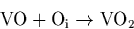
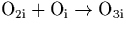
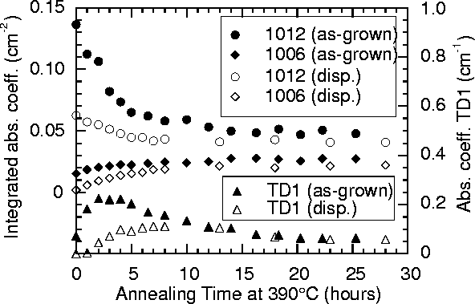

It is next important to consider the 1006 cm-1 mode. It was suggested earlier that this could be assigned to the trimer, O3i, since it too is normally present with the 1012 cm-1 mode, and since Oi is the most common impurity in Cz-Si it seems likely that O2i will complex with this. Of the modes discussed here, only the 1012 and 1006 modes are present in as-grown Cz-Si [239]. This also suggests that it must be one of the earlier complexes to form, with a trimer being the next simplest structure after the dimer. This mode has not been correlated with any of the early TDs (TD1-4).
The 1012 cm-1 dimer mode anneals out under first order reaction kinetics [149]. This is similar to the

reaction [79], which also obeys first order reaction kinetics since [Oi]>>[VO] and so effectively remains constant throughout the reaction. Therefore this observation is consistent with a reaction scheme .
Both the 1012 and 1006 behave similarly when exposed to oxygen
dispersion treatments (see Figure 6.12). This
behaviour is consistent with a dimer / trimer model, since in a 2 hour
dispersion treatment at 1100 C, the integrated intensity level
of the 1012 cm-1 level halves and the 1006 cm-1 practically
disappears. In the following anneal at 390
C, the integrated intensity level
of the 1012 cm-1 level halves and the 1006 cm-1 practically
disappears. In the following anneal at 390 C the 1012 level
then drops further as the dimers are not being replaced by Oi
diffusion. However the 1006 rapidly starts to reappear. This seems
inconsistent if it is assigned to a large defect centre but follows
naturally if it is assigned to trimers that are forming from the
remaining supply of dimers in the material. The graph is also useful
in later discussions of TD1, since the dispersion treatment
effectively removes the as-grown `pool' of trimers which has a
knock-on effect on the TD1 formation rate. We therefore conclude that
the 1006 cm-1 can be assigned to the oxygen trimer, O3i.
C the 1012 level
then drops further as the dimers are not being replaced by Oi
diffusion. However the 1006 rapidly starts to reappear. This seems
inconsistent if it is assigned to a large defect centre but follows
naturally if it is assigned to trimers that are forming from the
remaining supply of dimers in the material. The graph is also useful
in later discussions of TD1, since the dispersion treatment
effectively removes the as-grown `pool' of trimers which has a
knock-on effect on the TD1 formation rate. We therefore conclude that
the 1006 cm-1 can be assigned to the oxygen trimer, O3i.
|  |